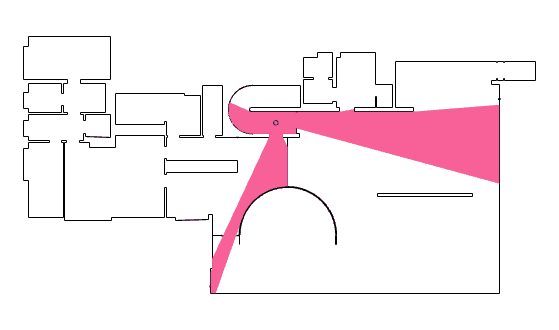

A toolkit bringing established and novel spatial analytics to Grasshopper. Isovists, thresholds, convex and axial maps, the Medial Axis Trasnsform, and more...
Almost every analysis starts from an Environment, the
boundary and obstacles of a plan, and the methods build on each other.
Isovist Analysis
Compute the visibility polygon of any point, or of every cell of a grid, and measure its area,
perimeter, occlusivity and compactness. Thresholds partition an isovist according to how
its occluding edges relate to each other.
Reduce a plan to its medial axis: a graph-like skeleton that identifies the parts of a floorplan,
and classifies each part as Line–Line, Convex–Line, Convex–Convex or
Concave.
Divide a plan into convex spaces, the units of space syntax, and read how they connect. Methods
from the field of shape recognition describe and compare the parts, so a plan can be broken down
into the shapes it is made of.

Navigation Agents
Release visibility-based agents into a floorplan. Each agent looks around, picks where to go from
its isovist, and moves on, so their paths show how a layout invites or discourages movement.
Get started in three steps
01 Install
In Rhino 8, run PackageManager, search for Syntaktika and click Install.
Restart Rhino.
02 Open a template
Place the Templates component (Syntaktika › General), right-click it and choose a
definition. See Templates.
03 Use your own floorplan
Replace the Boundary and Obstacles curves with your geometry: right-click
the parameter and choose Set one Curve or Set Multiple Curves.
How Syntaktika works
The Environment
Almost every analysis takes an Environment. It is built
from a closed boundary curve and any number of obstacles (walls,
columns, furniture). Curves are simplified into polylines, and their segments and corners are shared
by all analyses that use them.
Internally, the Environment works with integer coordinates, which keeps visibility and polygon
operations exact. Precision Scaling sets how many decimals are kept: 2
means a model in metres is resolved to the centimetre.
Dependencies
Syntaktika is written in C# and builds on a few open libraries. All of them ship with the plugin,
except pyvoronoi, which Rhino installs on first use.
RhinoCommon Rhino 8 SDK
Every input and output is ordinary Rhino geometry: points, curves, polylines and meshes. RhinoCommon
provides these types, and the Grasshopper SDK provides the components themselves.
Clipper2 polygon clipping
The Environment stores its boundary and obstacles as Clipper paths with 64-bit integer coordinates,
which is where the integer geometry comes from: coordinates are multiplied by Precision Scaling and
rounded. Clipper then computes unions, differences, areas and point-in-polygon tests exactly, for
example to build the free space of a plan and the isovist polygons.
QuikGraph graphs
The .NET graph library, the maintained successor of QuickGraph. The medial axis, its parts and the
visibility and threshold maps are stored as QuikGraph graphs, and its algorithms, such as connected
components, walk them.
MSAGL graph layout
Microsoft Automatic Graph Layout draws graphs as readable diagrams. Syntaktika uses its layered
(Sugiyama) layout to place the nodes and route the edges.
pyvoronoi Python, medial axis
The medial axis comes from the Voronoi diagram of the plan's line segments, computed by
pyvoronoi, a Python wrapper of the Boost.Polygon segment Voronoi.
How Python runs inside Syntaktika
No separate Python installation is needed. The script that calls pyvoronoi
(SegmentVoronoi.py) is embedded in the plugin and runs on Rhino 8's own CPython 3 engine,
the one behind the Script Editor, through RhinoCode (Rhino.Runtime.Code):
Start the engine. If Python 3 is not running yet, Syntaktika starts it in the
background, without opening a window, and the component recomputes once it is ready.
Install the package. The script's header, # r: pyvoronoi==1.2.4, tells
Rhino to install the package with pip the first time, so the first run needs an internet connection.
Version 1.2.4 is pinned because it is the latest with prebuilt packages for Rhino 8's Python 3.9;
newer versions would need a C++ compiler.
Solve. pyvoronoi works on integers, so segment endpoints are multiplied by Precision
Scaling and rounded. The script returns each Voronoi cell with its source segment and category, and
Syntaktika turns them back into Rhino polylines at the original scale.
Cite Syntaktika
If you use Syntaktika in your work, please cite it.
Vegas, G. (2026). Syntaktika: A Grasshopper plugin for advanced space syntax analysis,
visibility studies, and building geometry processing (Version 0.4.0) [Computer software].
https://gonzalovegas.com/syntaktika-site/
Analyse your first floor plan
Open a template, swap in your own curves, and read the results in Grasshopper.